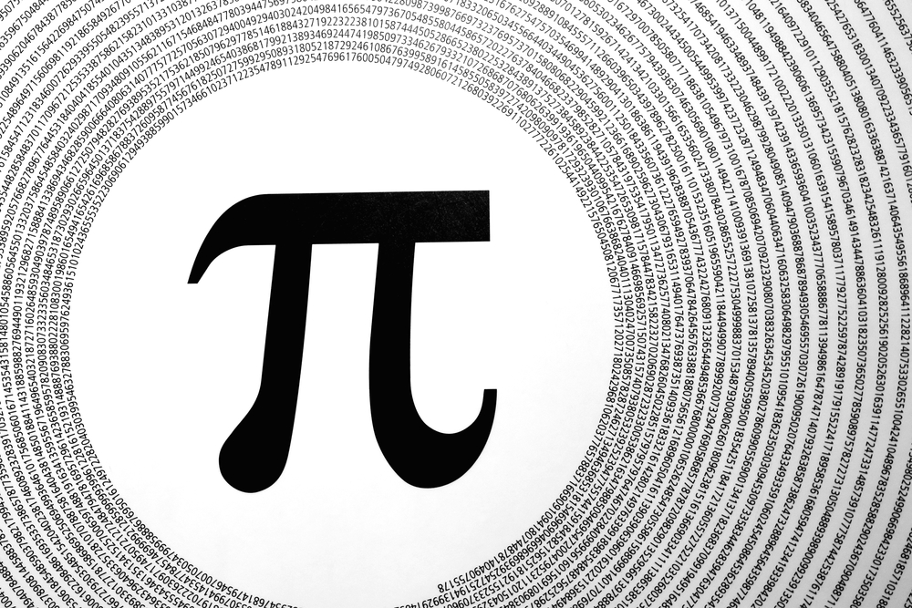

ЧИСЛО ПИ
Число Пи или Архимедово число - математическая константа, выражающая отношение длины окружности к ее диаметру. Число является иррациональным и не может быть выражено с помощью рациональной дроби.
Обозначение: π
Значение: 3,1416
